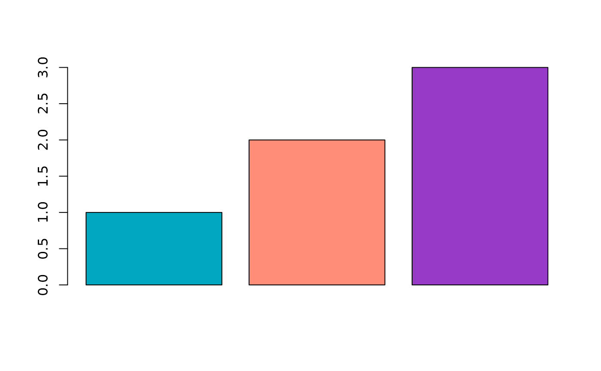

Named hex colors used by fundr palettes.
See also
Other colors:
fundr_pal(),
fundr_palette(),
scale_colour_fundr(),
scale_fill_fundr()
Examples
# Get all available colors
fundr_colors()
#> red white peach magenta teal aqua
#> "#ff0000" "#f2ebe7" "#ff8d78" "#933195" "#00a8bf" "#97c2a3"
#> bright blue violet pink purple black gray
#> "#327fef" "#8c84e3" "#ed86e0" "#963ac7" "#101921" "#d0ced5"
#> brown orange yellow green
#> "#7d3f16" "#ed8c00" "#f2ce00" "#909b44"
# Get specific colors by name
fundr_colors("teal", "magenta")
#> teal magenta
#> "#00a8bf" "#933195"
# Use in base R plotting
barplot(1:3, col = fundr_colors("teal", "peach", "purple"))
